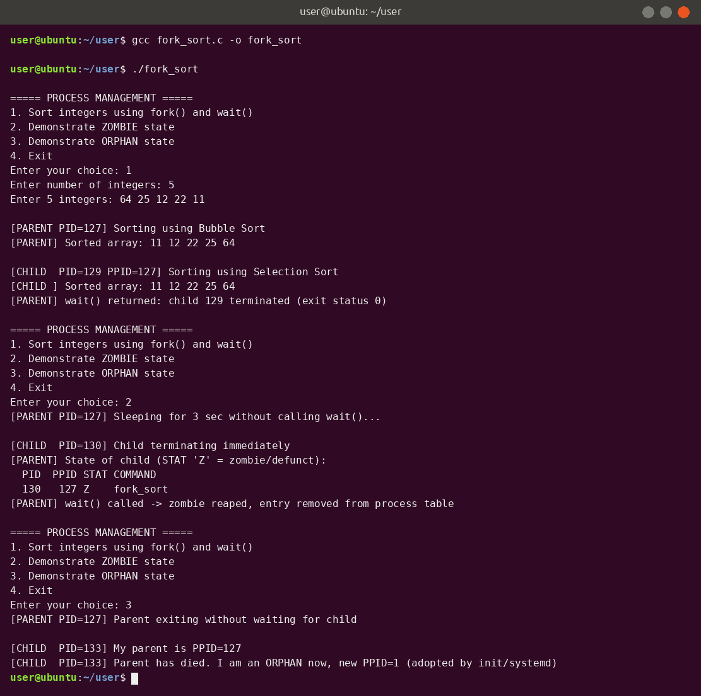

Practical 2
Process Management using fork() and wait() – Zombie and Orphan Processes
Theory
This practical shows how a process creates a child process and how the parent and child behave when one of them finishes first.
Key concepts
- Process – a program in execution. Every process has a PID (process ID) and a PPID (the PID of its parent).
fork()– creates a new process by copying the calling process. It returns twice:0in the child, the child's PID in the parent, and a negative value if it fails.wait()– makes the parent pause until a child terminates, then collects the child's exit status (read withWEXITSTATUS).exit()– ends a process and passes an exit status to its parent.
Zombie process
A child that has finished but whose parent has not yet called wait(). The child is no longer running, but its entry stays in the process table so the parent can still read its exit status. ps shows its state as Z (defunct). Calling wait() removes ("reaps") it.
Orphan process
A child that is still running after its parent has terminated. The operating system adopts it: its PPID changes to 1 (init / systemd), which will wait for it when it ends.
What the program does
- Option 1 – reads integers, then the parent sorts them with bubble sort while the child sorts them with selection sort; the parent calls
wait()for the child. - Option 2 – the child exits immediately while the parent sleeps without calling
wait(), sopsshows the child as a zombie. - Option 3 – the parent exits first while the child keeps running, so the child becomes an orphan and its PPID changes to 1.
Code
/* Practical 2 : fork(), wait(), zombie and orphan processes */
#include <stdio.h>
#include <stdlib.h>
#include <unistd.h>
#include <sys/types.h>
#include <sys/wait.h>
void bubble_sort(int a[], int n) {
for (int i = 0; i < n - 1; i++)
for (int j = 0; j < n - i - 1; j++)
if (a[j] > a[j + 1]) { int t = a[j]; a[j] = a[j + 1]; a[j + 1] = t; }
}
void selection_sort(int a[], int n) {
for (int i = 0; i < n - 1; i++) {
int min = i;
for (int j = i + 1; j < n; j++)
if (a[j] < a[min]) min = j;
int t = a[i]; a[i] = a[min]; a[min] = t;
}
}
void print_array(const char *label, int a[], int n) {
printf("%s:", label);
for (int i = 0; i < n; i++) printf(" %d", a[i]);
printf("\n");
}
void sort_demo(void) {
int n, a[50], b[50];
printf("Enter number of integers: ");
scanf("%d", &n);
printf("Enter %d integers: ", n);
for (int i = 0; i < n; i++) { scanf("%d", &a[i]); b[i] = a[i]; }
fflush(stdout);
pid_t pid = fork();
if (pid < 0) {
perror("fork failed");
return;
} else if (pid == 0) { /* CHILD */
printf("\n[CHILD PID=%d PPID=%d] Sorting using Selection Sort\n", getpid(), getppid());
selection_sort(b, n);
print_array("[CHILD ] Sorted array", b, n);
exit(0);
} else { /* PARENT */
printf("\n[PARENT PID=%d] Sorting using Bubble Sort\n", getpid());
bubble_sort(a, n);
print_array("[PARENT] Sorted array", a, n);
int status;
pid_t w = wait(&status); /* wait for child */
printf("[PARENT] wait() returned: child %d terminated (exit status %d)\n", w,
WEXITSTATUS(status));
}
}
void zombie_demo(void) {
fflush(stdout);
pid_t pid = fork();
if (pid == 0) {
printf("\n[CHILD PID=%d] Child terminating immediately\n", getpid());
exit(0);
} else {
printf("[PARENT PID=%d] Sleeping for 3 sec without calling wait()...\n", getpid());
sleep(3);
printf("[PARENT] State of child (STAT 'Z' = zombie/defunct):\n");
fflush(stdout);
char cmd[100];
snprintf(cmd, sizeof cmd, "ps -o pid,ppid,stat,comm -p %d", pid);
system(cmd);
wait(NULL);
printf("[PARENT] wait() called -> zombie reaped, entry removed from process table\n");
}
}
void orphan_demo(void) {
fflush(stdout);
pid_t pid = fork();
if (pid == 0) {
printf("\n[CHILD PID=%d] My parent is PPID=%d\n", getpid(), getppid());
fflush(stdout);
sleep(3);
printf("[CHILD PID=%d] Parent has died. I am an ORPHAN now, new PPID=%d (adopted by init/systemd)\n",
getpid(), getppid());
exit(0);
} else {
printf("[PARENT PID=%d] Parent exiting without waiting for child\n", getpid());
sleep(1);
exit(0);
}
}
int main(void) {
int ch;
do {
printf("\n===== PROCESS MANAGEMENT =====\n");
printf("1. Sort integers using fork() and wait()\n");
printf("2. Demonstrate ZOMBIE state\n");
printf("3. Demonstrate ORPHAN state\n");
printf("4. Exit\n");
printf("Enter your choice: ");
scanf("%d", &ch);
switch (ch) {
case 1: sort_demo(); break;
case 2: zombie_demo(); break;
case 3: orphan_demo(); break;
case 4: break;
default: printf("Invalid choice\n");
}
} while (ch != 4);
return 0;
}
Output

Tap or click the screenshot to open it full size.